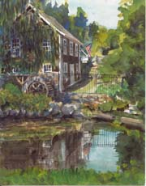

Brewster
|
Things to do in Brewster are clustered around Rte 6A and
roads that connect to it. Nickerson State Park offers enough
activities for a full day of fun. The Cape Cod Museum of Natural
History and its walking trails provide hours of entertainment.
Explore the other attractions and have lunch at the Brewster Fish House on Rte 6A, close to
everything.
See the
Brewster overview and Chamber
of Commerce sites, and check out Brewster
restaurants.
Stoney Brook Grist Mill
|

|

 Cape Cod Museum of Natural History
Cape Cod Museum of Natural History
The Cape Cod Museum of Natural History offers special events including
educational programs, films and guided walks at the museum, as well
as tours to other locations. See the Tours
page for additional information, or go directly to the Cape
Cod Museum of Natural History web site. The museum is located
on Rte 6A, 1.6 miles west of Rte 137 and 6A. 896-3867.
Starting at the museum, the John Wing walking trail takes you through
140 acres of upland woods, saltmarsh, and coastal beach on Cape
Cod Bay. The South trail crosses Paine Creek and a beech forest.
On a rainy day, skip the walks and explore inside the museum. The
Short Nature Walks book describes
the trails.
Stoney
Brook Grist Mill
This is such a lovely place you may want to stay all day, although
the walk around the mill pond is only a quarter mile. The sights
include blooming flowers, fish and wildlife, and the turning waterwheel.
See the exhibits in the upstairs museum and grind some corn on Fri.
afternoons. Go across the road to see the herring run in Stoney
Brook. From Rte 6A, take Sawtucket Rd .7 mi. The Short
Nature Walks book describes the trails.
Brewster General Store
Browse through the amazing collection of unusual things, and get
some snacks too. 1935 Rte 6A, 896-3744
 Breakwater Beach
Breakwater Beach
This is one of several beaches on Cape Cod Bay in Brewster. The
beach is very flat and you can walk a long way out when the tide
is low. It provides a dramatic view of the sunset when it's timed
with low tide. The beach is a half mile walk (or bike ride or drive)
down Breakwater Rd. from the Brewster General Store.
Basset Wild Animal Farm
It's really for kids but if you're a kid at heart, it's worth
a visit. The animal farm takes in and cares for distressed animals
like the hawk that was too badly injured to release back to the
wild. Highlights were the lion and tiger (raised by the owner) and
baby goats just a few hours old. Located at 620 Tubman Rd, 896-3224.

 Nickerson State Park
Nickerson State Park
Nickerson
State Park covers about 2000 acres in Brewster. It has eight
miles of bicycling trails that weave up and down hills through the
woods. The rail trail connects with the park and bicycle rentals
are nearby. You can swim or boat at Cliff Pond, Flax Pond and Little
Cliff Pond, and rent a small boat at Flax Pond. Walking trails go
around all three ponds. This is a wonderful park to explore, and
parking is free.
Nickerson State Park, 3488 Rte 6A, 896-3491. Good maps are available
at the entrance. Jack's Boat Rentals at Flax Pond (896-8556) rents
canoes, kayaks, pedalboats, small sailboats, and sailboards, and
offers sailing and windsurfing lessons.
The
Rail Trail
The Rail Trail crosses Rte 6A at Nickerson State Park, toward Orleans,
and veers southwest across Brewster. This section is cool and shady,
but has old pavement with potholes. Underpass Rd or Nickerson Park
is a good place to park and get on the trail. Leaving the trail,
it would be easy to visit all these other attractions in Brewster
on your bike. Just check the map.
|